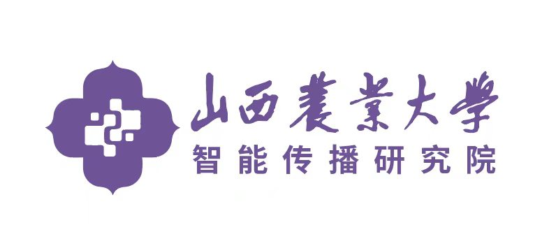
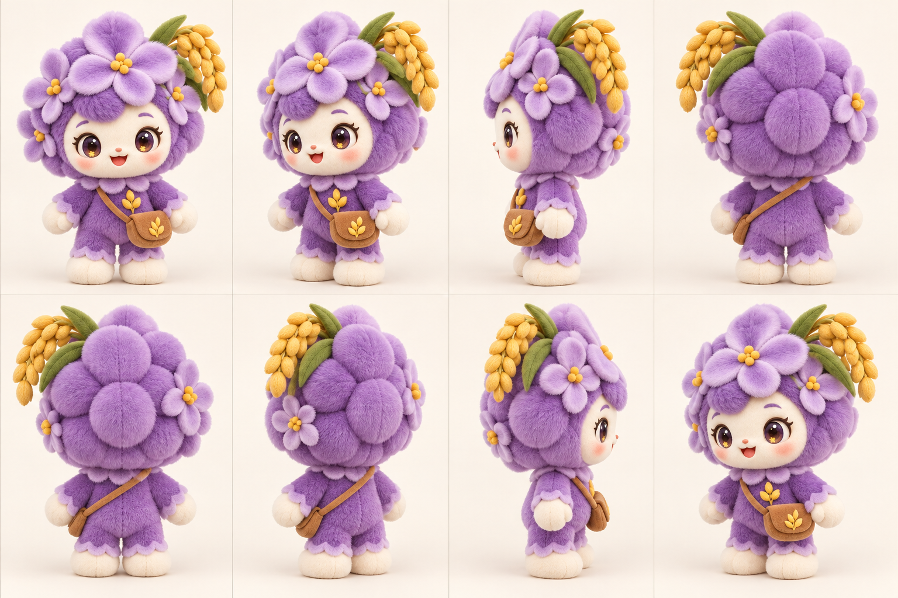

尺寸与比例
首样建议总高约 30–35 cm（含麦穗）；大头、小身体、短四肢。头冠外轮廓约占全高六成，脸部保持圆润，双脚做成可稳定站立的厚底。具体尺寸以纸样与实物校核。

山西农业大学智能传播研究院发起紫丁香计划 ✦以官网的毛茸茸形象为基准，提供正、侧、背与斜侧八个视角。转动查看花瓣、麦穗、脸部、挎包的空间关系，再按下方要点制作第一只实物样品。
拖动形象、点击角度，或使用键盘左右方向键。八张图用于传达造型，不代替三维模型和 1:1 裁片。
顺序为正面 0°、右前 45°、右侧 90°、右后 135°、背面 180°、左后 225°、左侧 270°、左前 315°。以正面脸型和背面花瓣结构作为首样检查重点。

以下是沟通打样的建议参数。制作方应先出尺寸图、纸样和面料样，再以实物首样确认比例、站姿、手感与工艺。
首样建议总高约 30–35 cm（含麦穗）；大头、小身体、短四肢。头冠外轮廓约占全高六成，脸部保持圆润，双脚做成可稳定站立的厚底。具体尺寸以纸样与实物校核。
头冠和身体用紫丁香色短毛绒，主花瓣用更细密的浅紫绒；脸与手脚用奶油白短绒。麦穗为暖金色软布，叶片为橄榄绿，挎包为浅棕绒面。颜色以实际布样对照确认。
建议拆为头部花冠、面部绣片、五瓣主花、侧面小花、麦穗与叶片、身体、四肢、挎包与包带。背面花瓣要有完整层次，不能只做一个光滑圆球。
大眼要保留高光和温柔神态，眉眼位置左右对称。鼻尖小、嘴部轻微上扬。儿童接触版本优先使用刺绣或牢固的织物工艺，并由制作方按实际用途确认细节方案。
花瓣边缘保持饱满，麦穗、花心、包带与小包反复检查连接强度。内填充均匀，头部不过重；避免可见硬线材或容易脱落的小件。
首样附八面实拍、尺寸表、布样卡、刺绣与配件做法，以及可修改意见。后续包装可延续紫丁香紫、暖白和谷穗纹样；量产前再确认标签、授权与用途要求。
请对方先回一版 1:1 尺寸图、纸样拆件建议、面料样卡与报价。八视角图是形象沟通稿，最终制版、结构、安全性和生产授权仍须双方确认。